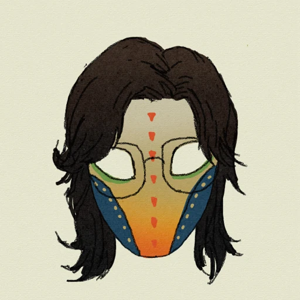

Heng Zhang
AstraThreshold
无理造物 / WoooLAB
大雅之堂
香港科技大学（广州）机器人与自主系统（ROAS）博士生
强脑科技电子硬件实习生
我主要做电路与 PCB 设计、MCU 编程及嵌入式交互开发。在 GitHub 分享开源项目，在哔哩哔哩记录制作过程，也在探索相机与成像系统。
- 2026 — 至今
- 香港科技大学（广州） · ROAS 博士研究生
- 2025 — 至今
- 强脑科技 BrainCo · 电子硬件实习生
- 2021 — 2026
- 北京工业大学 · 机器人工程本科
蓝桥杯国赛一等奖 · 全国第十
工业互联网嵌入式开发工程师（中级） · PCB 设计（初级）
个人作品
AstraView
在研围绕即时成像相机展开的个人项目，探索光学取景、信息叠加与电子控制的结合，持续推进光路、机械结构和显示驱动的设计与验证。
GitHub 数据核对于 2026.11。全部项目
实习经历
强脑科技 BrainCo
2025.11 — 至今浙江强脑科技有限公司 · 深圳分公司
电子硬件实习生
PCB 设计绘制、测试与返修；STM32、ESP32 等 MCU 编程。
北京长城永基安全技术有限公司
2023.03 — 2024.03硬件工程师 · 实习
工业遥控器遥控端与设备端的控制板、功率板原理图及 PCB Layout；涉及工业 AC 380 V、大电流负载与板级安全设计。
北京哈工科教机器人科技有限公司
2022.03 — 2023.04机器人教学产品设计 / 测试 · 实习
机器人教育器材的开发板、传感器与配套执行器电路设计及 PCB Layout，配套软件 API 开发与产品测试。
北京坚果夏天科技有限公司
2021.09 — 2023.03机器人教学产品设计 / 测试 · 实习
参与机器人教学产品的软硬件开发与测试，包括电路与 PCB 设计，以及配套软件 API 开发。
机器人教育与竞赛指导2021 — 2026
在多所学校和机构担任机器人竞赛教练、指导教师与 Python 教师，涉及 RoboMaster、VEX、LEGO FLL 及嵌入式创意项目；指导 C/C++、Python 编程与参赛作品制作。
- 北京市昌平区第一中学2021.07 — 2026.01
- 慧思锦辰（北京）有限公司2021.09 起
- 北京市润丰学校2022.03 — 2023.01
- 芳草地国际学校世纪小学2023.02 — 2024.08
- 北京大学附属小学2023.04 — 2023.06
- 北京石油学院附属实验小学2024.03 — 2024.07
- 北京市昌平区第二中学2024.05 — 2025.05
获奖与证书
竞赛与项目
- 第十五届蓝桥杯电子赛 · 全国一等奖，全国第十
- 第十五届蓝桥杯电子赛 · 北京赛区一等奖，入围国赛
- 国家大学生创新创业训练计划 · 项目资助
- 第七届中国国际“互联网+”大学生创新创业大赛 · 全国总决赛入围
早期奖项2019 — 2020
- DJI RoboMaster 高中生机器人夏令营 · 入选，算法组三等奖
- DJI RoboMaster 高中生机器人冬令营 · 入选，优胜奖
- 清华大学“创计划” · 优胜奖
- 第三十七届北京市学生科技节 · “智”项目一等奖
- 第三十七届北京市学生科技节 · 创客马拉松三等奖
专业证书
- 工业互联网嵌入式开发工程师（中级）
- 工业互联网嵌入式开发工程师（初级）
- PCB 设计（初级）
其他经历
嘉立创校园大使（2023） · DJI RoboMaster 校园大使（2020）